The Challenge
Calling all book nerds (and culture critics of any type): our latest guide challenges you to make an app that collects and shares original reviews of your favorite -or most detested- books.
We were once again inspired by our friends at YR Media, who reported earlier this year on an intriguing subculture: young people on YouTube who make bootleg audiobooks, some with huge followings. Cool, right? But is it legal...? Check out YR’s story to find out.
And while you’re at it, create your very own mobile platform for reviews -yours and your friends'- so that next time you’re in the market for a book, you’ll know just which titles to pick...and which to skip.
Click "Connect Your App" below to start building your app!
Connect Your App
DIY Book Club Tutorial (Level: Advanced)
Introduction
In this project, you will create an app that allows multiple users to write and read book reviews. You will familiarize yourself with the CloudDB component of MIT App Inventor, and learn how to store, access and modify data in the Cloud.
The User Interface
This is what the interface will look like when the user starts the program.
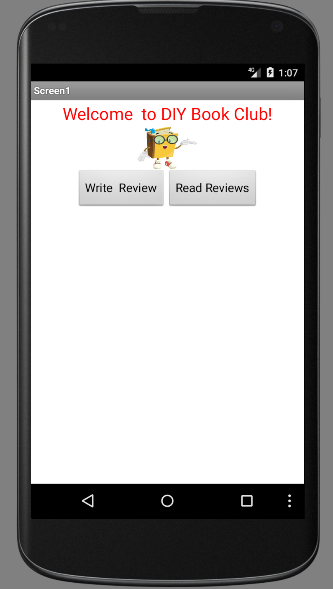The User Interface
This is what the interface will look like when the "Write Review" button is pressed. Here, the user can write and submit a review for a book of their choice.
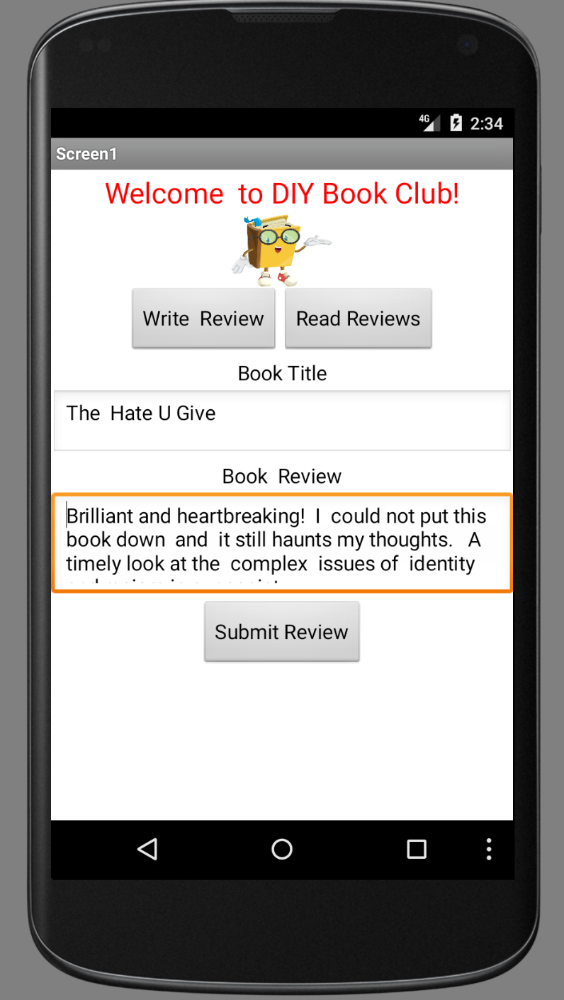The User Interface
This searchable list of book titles appears when the user presses the "Read Reviews" button.

The User Interface
When the user selects a particular book title, all the reviews previously submitted for that book title are displayed.
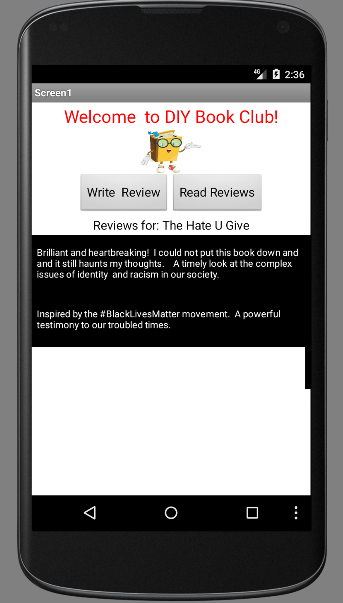Add Components
Here is the Designer view of the User Interface and its corresponding list of Components. Note that there is a HorizontalArrangement for the write and read buttons and there are several vertical arrangements where different components are embedded to facilitate hiding and showing.
Also note that the "Read Reviews" button is actually a ListPicker from the User Interface tab of the Palette. The interface where the reviews are displayed is a ListView from the User Interface tab of the Palette.
Click on the images to enlarge. Click elsewhere to close the enlarged images.
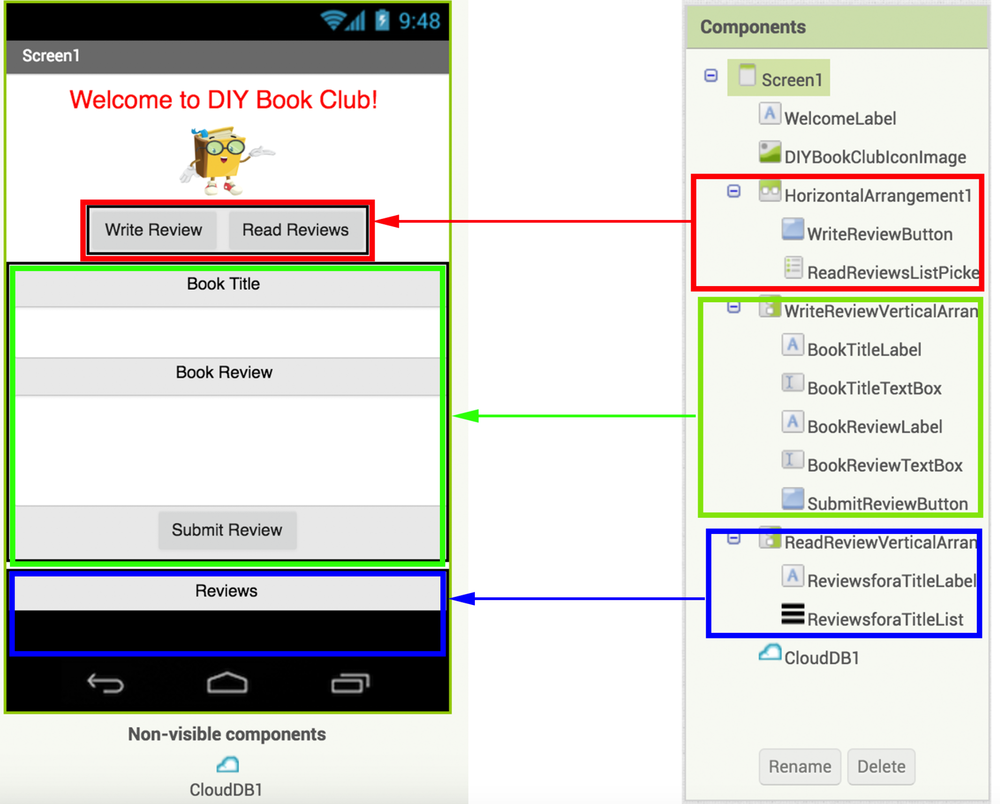If you need some help with setting up and naming the User Interface, click on the help buttons below.

Modify Component Properties
Here are a few components with some other properties that need to be set.
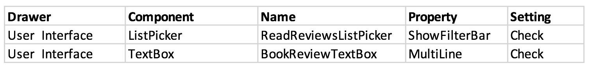The first setting change allows the user to search the list of reviews through the use of a filter when the ReadReviewsListPicker is clicked.
The second property setting allows the user to enter multiple lines in the TextBox for writing reviews.
You can tweak other components' properties to get the look and feel you want.
Introduction to CloudDB
For this project you will use CloudDB as your database to store the book titles and reviews entered by your users. This invisible component can be found in the Storage tab of the Palette. Grab and drop the CloudDB component on your Screen1 to add it to your app's Components.
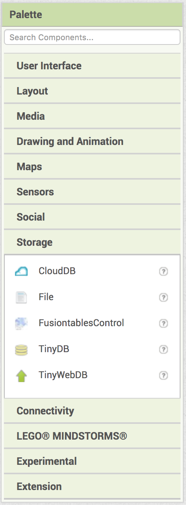Introduction to CloudDB
You may have previously used the TinyDB component, which stores data locally on the user's mobile phone or tablet. TinyDB can only be accessed by one user on a single device. On the other hand CloudDB allows multiple users to store, access and modify data in the Cloud.
Here are some of the blocks in the CloudDB drawer.
The following block allows you to store a value in CloudDB using a unique tag, very much like how you would assign a value to a uniquely named variable. One important difference to note however is that while a variable can hold a value only until the app quits, a value stored in the CloudDB will be available to the user each time the app is run until the value is erased.

The following block is similar to the block above; however, this block allows you to add a value at the end of a list stored in CloudDB under a unique tag.

The following block allows you to retrieve a value stored in CloudDB using its tag. If there is no such tag, you can choose to return some other value like the empty string or the empty list.

Note that the unlike the "get" call made to TinyDB, which returns a value (almost) instantaneously, the "get" call to CloudDB is a request made to the database and does not return a value instantaneously. When the database finally retrieves the desired value stored under the given tag, it triggers a GotValue event.
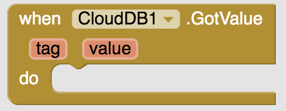One of the most important blocks in the CloudDB drawer is the following block. When data is changed in the Cloud database, CloudDB informs all the users of the app of this change so that changes can be made on local devices as needed.

The following block allows you to erase a tag and its current value.

Introduction to CloudDB
In CloudDB, you will store book titles as "tags." Each tag (i.e., book title) is linked to a list of reviews associated with that title. The diagram below may help you visualize how this works. When a user enters a review for a book title already in the database, CloudDB identifies the title as an existing tag. Then, the new review is added to the list of existing reviews associated with the given tag (i.e. book title).
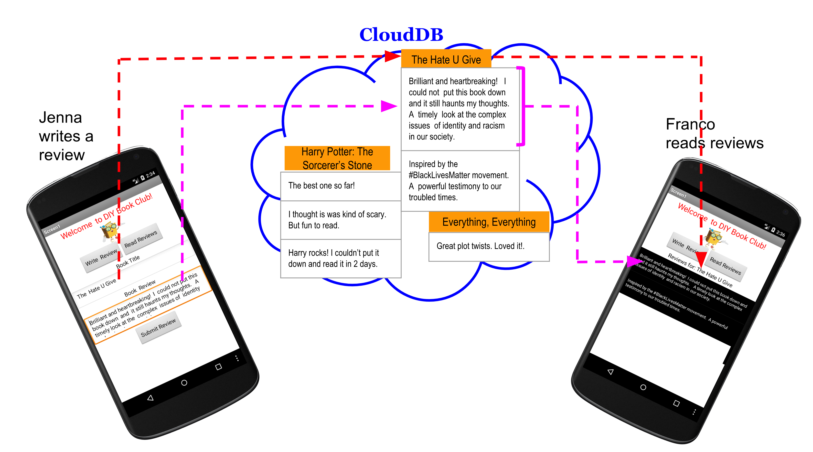Blocks
Now you will give functionality to the User Interface (UI) you have created. Switch to the Blocks Editor.
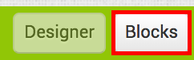Initialization
First, initialize the app screen by hiding the two vertical arrangements for writing and reading reviews. You can find the Initialize block in the Screen1 drawer.

Writing A Review
When the WriteReviewButton is clicked, reveal the first vertical arrangement containing the interface for writing reviews by making it visible. The second vertical arrangement containing the interface for reading reviews should still be hidden.
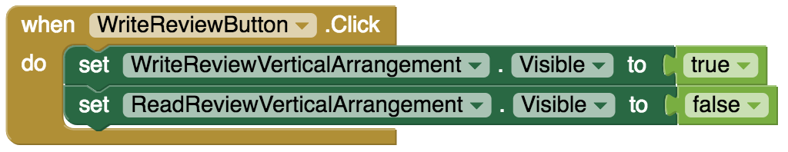Submitting A Review
When the user submits a book review, let the book title be the tag and the review text be the itemToAdd to the CloudDB. With this method you will make sure that all the reviews associated with a particular book title are grouped together. When the SubmitReviewButton is clicked, clear and hide the interface for writing reviews.
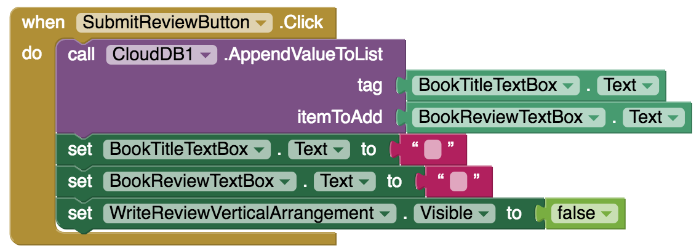Note that in the CloudDB each book title (tag) has as its value a list that contains all the reviews for that title. New reviews are appended to the end of the list, rather than overwriting previous entries.
Reading Reviews
When the user presses the "Read Reviews" button (i.e. ReadReviewsListPicker), show the review reading interface contained in ReadReviewVerticalArrangement , and hide the review writing interface. Also, send a request to the CloudDB to get the list of tags stored. Each book title is a tag, so this will return a list of all the book titles in CloudDB that currently have reviews. You will display this list for the user so they can choose which book reviews to read.

Reading Reviews
When the CloudDB returns the TagList containing the book titles, assign these titles as the Elements of the ReadReviewsListPicker. This assignment will list all previously entered book titles for the user.

Reading Reviews
When the user picks a book title from the list picker, send a request to CloudDB to get all the reviews associated with that book title.
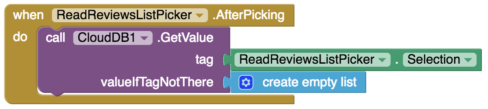Note that GetValue is asking for a list of reviews, so the valueIfTagNotThere should be an empty list.
Reading Reviews
The GetValue action requests information from CloudDB. When CloudDB responds to the request, a GotValue event is triggered. Remember that the tag is the book title. The value will be the list of reviews for that book title.
When CloudDB returns the list of the reviews for the requested book title, display these in the ReviewsforaTitleList, which is a ListView object from the User Interface tab of the Palette.
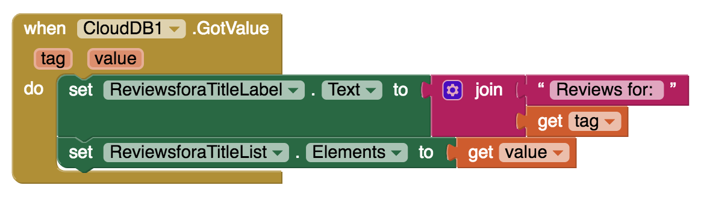Testing Your App
Because this app sends information to the cloud to be shared by multiple users, it is helpful to test it using at least two devices so you can check that each user is properly accessing the cloud and getting the data updates.
Go to the "Build" menu at the top of the screen and click on "App (provide QR code for .apk)". This will start the process of building the app so it can be installed on any tablet.
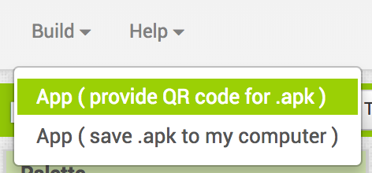A QR code will appear in a pop-up window once the app is built. This may take a few minutes. When it appears, both you and your partner should scan it using your devices. Follow the prompts to download and install the .apk on your tablets.

Make sure that each user of your app is able to write and submit a review and is able to read reviews submitted by other users of your app. Please note that when you first use your app, the CloudDB associated with your app will be empty. Also note that there might be a slight delay before the data entered into the CloudDB is readable on your app.
After testing, if you need to make adjustments to your code, you will need to uninstall the old .apk file from each tablet and do a new build, repeating the above procedure.
Done!
Congratulations! Fantastic job!
Expand Your App
- Currently there is no way to erase all the contents of the CloudDB when you want to restart everything fresh. Create a “Clear Database” button to erase everything stored in the CloudDB.
- Make the "Clear Database" button password protected so that only an administrator of the database can erase it.
- Allow the users of the app to upload images along with their book reviews.
- Allow users to input their book reviews via speech rather than typing.
- Allow users to listen to book reviews rather than read.
- Allow users to rate the books using something like a 5-star system. Report the average ratings associated with each book title.
- Currently any slight differences in the writing of a book title will lead to the creation of different tags. For example, "Catcher in the Rye", Catcher In The Rye" and "CATCHER IN THE RYE" will be assumed to be different book titles. You could solve this issue by making existing book titles selectable for writing review. Come up with a solution to this issue.
About Youth Mobile Power
A lot of us spend all day on our phones, hooked on our favorite apps. We keep typing and swiping, even when we know the risks phones can pose to our attention, privacy, and even our safety. But the computers in our pockets also create untapped opportunities for young people to learn, connect and transform our communities.
That’s why MIT and YR Media teamed up to launch the Youth Mobile Power series. YR teens produce stories highlighting how young people use their phones in surprising and powerful ways. Meanwhile, the team at MIT is continually enhancing MIT App Inventor to make it possible for users like you to create apps like the ones featured in YR’s reporting.
Essentially: get inspired by the story, get busy making your own app!

The YR + MIT collaboration is supported in part by the National Science Foundation. This material is based upon work supported by the National Science Foundation under Grant No. (1614239). Any opinions, findings and conclusions or recommendations expressed in this material are those of the author(s) and do not necessarily reflect the views of the National Science Foundation.
Check out more apps and interactive news content created by YR here.